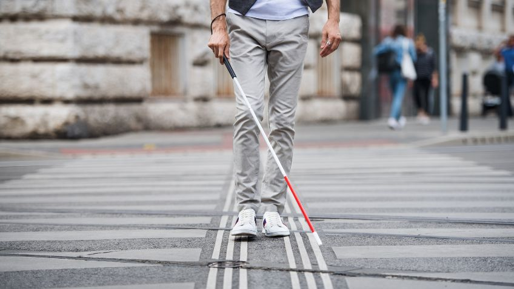

Problem Identification
Understanding the accessibility and vision impairment challenge in Malaysia — and why readlens is needed.
The Accessibility Challenge
Visual impairment and myopia are major public health concerns in Malaysia. According to the National Eye Surveys (2024), the prevalence of blindness among adults aged ≥ 50 years is 0.6–1.6 %, with untreated cataracts and diabetic retinopathy as leading causes.
Meanwhile, a systematic review by the Ministry of Health and IMU University (2026) found that up to 42.7 % of Malaysian adolescents experience myopia, with higher rates among females and Chinese Malaysians.
Existing assistive technologies—such as imported smart glasses and handheld readers—are cost prohibitive (RM 10,000–RM 15,000) and not locally serviceable, leaving many visually impaired Malaysians without practical support.

Target Users & Industry Focus
Primary Users: Blind and severely visually impaired individuals needing real-time text-to-speech and object identification assistance.
Secondary Users: Myopic and low-vision users requiring audio-based feedback for reading and everyday tasks.
Industry Focus: readlens operates within the assistive technology and healthcare innovation sector, addressing the lack of affordable, AI-powered wearable solutions for Malaysia's visually impaired community. By integrating ESP32-S3 + OV5640 camera with a connected mobile application, readlens enables users to:
- Read printed or handwritten text via OCR and receive speech feedback.
- Identify surrounding objects in real time.
- Switch between modes easily using a tactile button with audio confirmation.
- Benefit from modular, locally sourced components for easy maintenance and scalability.

Project Goal
readlens is an affordable, wearable AI smart-glasses system designed to assist blind and myopic users in daily reading and object identification tasks. It integrates a camera, embedded processing, and a connected mobile application to perform text recognition and object identification, providing real-time spoken feedback through Bluetooth earphones.
Solution Strategy
- ESP32-S3 + OV5640 Camera — captures real-time images and streams them to the connected mobile app.
- readLens Mobile Application — processes captured images using AI models (EasyOCR for text recognition, LLaVA for object identification).
- Audio Feedback System — delivers spoken results and mode confirmations via Bluetooth earphones.
- Button Press Logic — tactile push button (GPIO4) controls capture and toggles between Text Mode and Object Mode, with audio prompts confirming the active mode.
- Confidence Threshold Decision — ensures reliable outputs; unclear results trigger retry prompts (“Result unclear, adjust angle”).
- Lightweight Modular Design — compact assembly (≤ 150 g) with detachable modules for battery, camera, and drivers.
- Affordable Components — built with ESP32-S3, OV5640, Li-Po battery, and Bluetooth drivers available in Malaysia.
Global Impact Alignment
The readlens system is closely aligned with the UN Sustainable Development Goal 3 (Good Health and Well-Being), specifically Target 3.8: Achieve universal health coverage and access to assistive technologies for persons with disabilities.
| Category | readlens Contribution |
|---|---|
| Direct Impact | Empowers blind and myopic individuals with independence through AI-assisted reading and object identification. |
| Target Achievement | Addresses accessibility gaps in Malaysia by providing a low-cost, locally manufacturable assistive device. |
| Health Outcome | Reduces mental strain, social isolation, and accidents caused by visual impairment through real-time audio feedback. |
| Alignment | Supports Malaysia's Digital Inclusion and Accessibility Framework (2025–2030) by integrating AI into healthcare and assistive technologies. |
Broader Societal Benefits
- Enhances educational access for visually impaired students through text-to-speech reading.
- Promotes safe urban mobility with obstacle detection and distance alerts.
- Encourages local innovation by using components available in Malaysia's maker ecosystem.
- Contributes to inclusive technology development, aligning with SDG 10: Reduced Inequalities.
Benchmarking
Comprehensive comparison of readlens against existing assistive solutions across four key categories.
| User Needs / Products | Google Lookout App | Envision Glasses | OrCam MyEye Pro | readlens |
|---|---|---|---|---|
| 1. Text Recognition (OCR) | ||||
| OCR Engine | Google Cloud Vision | Envision AI Cloud | OrCam AI Offline | Smartphone App (Ollama, Llava AI) |
| Response Time | 2–3 s (cloud latency) | 2–3 s (cloud latency) | ~ 2 s (on-device) | ≤ 1.5 s (capture → speech) |
| Output Method | Audio via phone | Audio via earpiece | Audio via speaker | Speech via earphone drivers (Bluetooth A2DP/SBC) |
| 2. Object Identification | ||||
| Detection Type | Cloud AI scene description | Cloud AI scene description | Offline object database | On-device AI + App query chatbot |
| Interaction | Limited voice commands | Limited voice commands | Fixed responses | User can ask AI chatbot follow-up questions about captured image |
| Detection Speed | Cloud-dependent (~ 400 ms) | Cloud-dependent (~ 300 ms) | On-device (~ 200 ms) | Instant (sensor trigger + AI app processing) |
| 3. Accessibility & Usability | ||||
| Target Users | General users with visual impairment | Blind and Low-Vision Users | Blind and Low-Vision Users | Blind and Low-Vision Users |
| Weight | Smartphone only | ~ 200 g | ~ 180 g | ≤ 150 g (total device) |
| Installation Type | App installation | Fully integrated | Clip-on module | Plug-and-play (USB charging + Bluetooth pairing) |
| Professional Setup | Not required | Required for pairing and training | Required for calibration | Not required |
| 4. Cost & Maintenance | ||||
| Estimated Cost | Free app | > RM 10,000 | > RM 15,000 | ≤ RM 300 (BOM target) |
| Component Availability | Software only | Imported only | Imported only | Local Malaysia market (PAM8403, ESP32-S3, OV5640, earphone drivers) |
| Repairability | N/A | Proprietary hardware | Proprietary hardware | Modular design (PCB + replaceable modules) |
Research Validation
readlens is built on a solid scientific foundation. The core logic for AI-assisted navigation, obstacle detection, and accessibility is rigorously validated against key peer-reviewed research papers and established psychophysiological measures.
Prevalence of visual impairment and its causes in adults aged 50 years and older: Estimates from the National Eye Surveys in Malaysia (PLOS One) The Value of Vision: The case for investing in eye health (IAPB Vision Atlas) Prevalence of Myopia in Children and Adolescents: A Systematic Review of Malaysian Prevalence Studies (USM) Braille Reading Accuracy of Students Who Are Visually Impaired: The Effects of Gender, Age at Vision Loss, and Level of Education